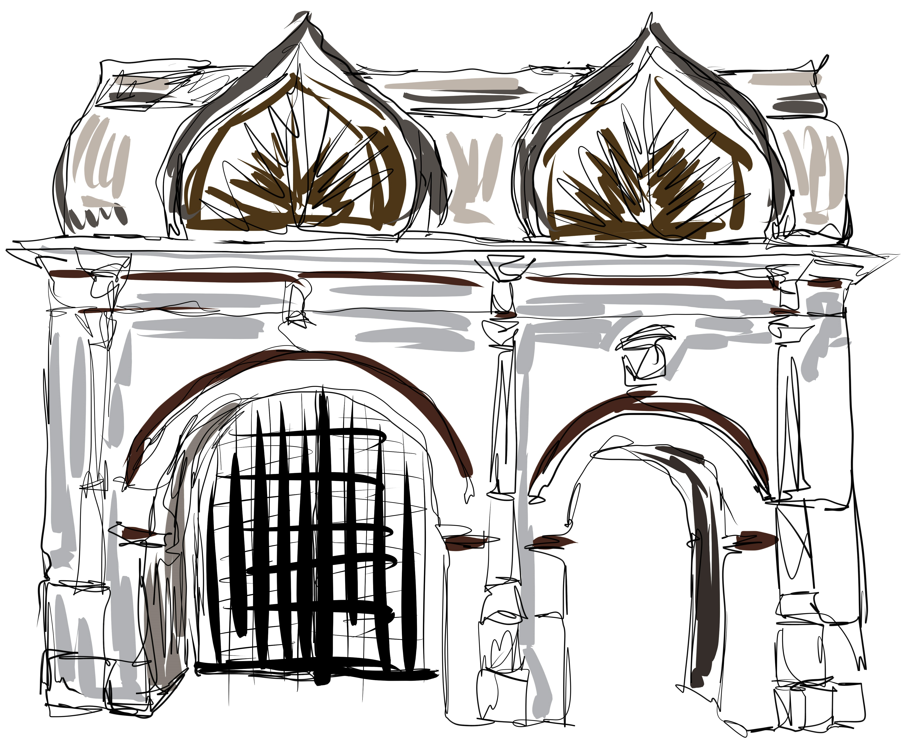

 1. СПАССКИЕ ВОРОТА — АРХИТЕКТУРНЫЙ ПАМЯТНИК XVII ВЕКА НА ТЕРРИТОРИИ МУЗЕЯ-ЗАПОВЕДНИКА КОЛОМЕНСКОЕ. ВОРОТА РАСПОЛОЖЕНЫ У ЗАПАДНОЙ ГРАНИЦЫ ГОСУДАРЕВА ДВОРА И С КОНЦА XVIII ВЕКА СЛУЖИЛИ ОСНОВНЫМ ВЪЕЗДОМ НА ХОЗЯЙСТВЕННЫЙ ДВОР ЦАРСКОЙ РЕЗИДЕНЦИИ. ОЧНАЯ ДАТА ПОСТРОЙКИ ВОРОТ НЕИЗВЕСТНА. ВОЗМОЖНО, ОНИ ПОЯВИЛИСЬ ПРИ ПЕРЕСТРОЙКЕ УСАДЬБЫ В 70-Х ГОДАХ XVII ВЕКА (ПРЕДПОЛОЖИТЕЛЬНО В 1671—1672 ГГ.). СВОИМ НАЗВАНИЕМ ВОРОТА ОБЯЗАНЫ ИКОНЕ СПАСА НЕРУКОТВОРНОГО, РАНЕЕ НАХОДИВШЕЙСЯ В КИОТЕ НАД ПРОЕЗДНЫМИ АРКАМИ.
В XVIII ВЕКЕ ВОРОТА НЕСКОЛЬКО РАЗ РЕМОНТИРОВАЛИСЬ — В 1735, 1742 ГОДАХ И ПОЗДНЕЕ. В КОНЦЕ XVIII ВЕКА МЕНЬШИЕ ПО РАЗМЕРУ, ЧЕМ ПАРАДНЫЕ, НО НЕ МЕНЕЕ ПРЕДСТАВИТЕЛЬНЫЕ СПАССКИЕ ВОРОТА СТАЛИ ОСНОВНЫМ ВЪЕЗДОМ НА ТЕРРИТОРИЮ УСАДЬБЫ. ВЕРОЯТНО ПО ЭТОЙ ПРИЧИНЕ В XIX ВЕКЕ В КИЛЕВИДНЫЕ КОКОШНИКИ ВОРОТ БЫЛИ ВМОНТИРОВАНЫ ВЕНЗЕЛИ ПЕТРА I И ДВУГЛАВЫЕ ОРЛЫ.
ВЫПОЛНЕННЫЕ ИЗ КИРПИЧА, ВОРОТА ИМЕЮТ ДВА ПРОЛЁТА: ШИРОКИЙ БЫЛ ПРЕДНАЗНАЧЕН ДЛЯ ПРОЕЗДА ОБОЗОВ И ЭКИПАЖЕЙ, А БОЛЕЕ УЗКАЯ «КАЛИТКА» ИСПОЛЬЗОВАЛАСЬ ПЕШЕХОДАМИ. ФАСАДЫ ВОРОТ ОФОРМЛЕНЫ ПОДОБИЕМ ТОСКАНСКОГО ОРДЕРА. АРОЧНЫЕ ПРОЛЁТЫ ФЛАНКИРОВАНЫ ТРЁХЧЕТВЕРТНЫМИ КОЛОННАМИ И ОБРАМЛЕНЫ ПРОФИЛИРОВАННЫМИ АРХИВОЛЬТАМИ, ЧТО ПРИДАЁТ ОБЪЁМУ ВОРОТ ПЛАСТИЧЕСКУЮ НАСЫЩЕННОСТЬ. ПЛАСТИКУ ФАСАДОВ ДОПОЛНЯЕТ СОСТАВЛЕННЫЙ ИЗ СУХАРИКОВ ФРИЗ И КИОТЫ, ПОМЕЩЁННЫЕ НАД ПРОЁМАМИ ВОРОТ. СПАССКИЕ ВОРОТА ИМЕЮТ РЕДКОЕ ДЛЯ ВОРОТ ПОКРЫТИЕ В ВИДЕ «КРЕСЧАТОЙ БОЧКИ». КОНЁК КРОВЛИ БЫЛ УКРАШЕН ПРОРЕЗНЫМ МЕТАЛЛИЧЕСКИМ ГРЕБНЕМ.
В 1814 ГОДУ ПРИ ПОСТРОЙКЕ ДВОРЦА ИМПЕРАТОРА АЛЕКСАНДРА I СТРЕЛЕЦКИЕ КАРАУЛЬНИ БЫЛИ РАЗОБРАНЫ. В 1838 ГОДУ Е. Д. ТЮРИНЫМ БЫЛ РАЗРАБОТАН ПРОЕКТ ВОССТАНОВЛЕНИЯ ВОРОТ, ПРИЗВАННЫЙ ПРЕДОТВРАТИТЬ ПОСТЕПЕННОЕ РАЗРУШЕНИЕ ДЕРЕВЯННОГО ВЕРХА СООРУЖЕНИЯ. НА РЕАЛИЗАЦИЮ ПРОЕКТА ПОТРЕБОВАЛОСЬ НЕСКОЛЬКО РЕМОНТОВ, НАИБОЛЕЕ ЗНАЧИТЕЛЬНЫЙ ИЗ КОТОРЫХ БЫЛ В 1868 ГОДУ. РЕЗУЛЬТАТОМ ЭТИХ МЕРОПРИЯТИЙ СТАЛА ЗАМЕНА ОБВЕТШАВШЕГО ДЕРЕВЯННОГО ПОКРЫТИЯ НА ВАЛЬМОВУЮ КРОВЛЮ. НЫНЕШНЕЕ ЗАВЕРШЕНИЕ «КРЕСЧАТОЙ БОЧКОЙ» ПОЯВИЛОСЬ В ХОДЕ РЕСТАВРАЦИОННЫХ РАБОТ 1977—1978 ГОДОВ, ВЫПОЛНЕННЫХ ПО РЕЗУЛЬТАТАМ ИССЛЕДОВАНИЙ ИСТОРИЧЕСКИХ ДОКУМЕНТОВ, В ТОМ ЧИСЛЕ ОПИСИ 1740 ГОДА.
В 2001—2003 ГОДАХ БЫЛА ВЫПОЛНЕНА ПОЛНОМАСШТАБНАЯ РЕСТАВРАЦИЯ СПАССКИХ ВОРОТ, А В 2007 ГОДУ БЫЛИ ВОССТАНОВЛЕНЫ СТРЕЛЕЦКИЕ КАРАУЛЬНИ.
2. СПРАВА ОТ ВХОДА В 1667-1668 ГОДАХ ДЛЯ УДОВЛЕТВОРЕНИЯ ГАСТРОНОМИЧЕСКИХ ЗАПРОСОВ ЦАРЯ АЛЕКСЕЯ МИХАЙЛОВИЧА И ЕГО СВИТЫ БЫЛИ ПОСТРОЕНЫ КОРМОВОЙ И ХЛЕБНЫЙ ДВОРЦЫ. ЗДЕСЬ ВЫПЕКАЛИ ХЛЕБ, ГОТОВИЛИ РАЗНООБРАЗНЫЕ БЛЮДА ИЗ МЯСА, ДИЧИ, РЫБЫ, ОВОЩЕЙ И ХРАНИЛИ ПРИПАСЫ. ПОСТРОЙКИ ХОЗЯЙСТВЕННЫХ ДВОРОВ БЫЛИ ВОЗВЕДЕНЫ ОДНОВРЕМЕННО С ДЕРЕВЯННЫМ ЦАРСКИМ ДВОРЦОМ АЛЕКСЕЯ МИХАЙЛОВИЧА В 1667-1668 ГОДАХ. КАМЕННЫЕ ЗДАНИЯ ПРОСУЩЕСТВОВАЛИ ДО НАЧАЛА XIX ВЕКА. В 1815 ГОДУ ПОСТРОЙКИ РАЗОБРАЛИ, А КИРПИЧ УПОТРЕБИЛИ ДЛЯ СООРУЖЕНИЯ СТЕН, ПРИМЫКАЮЩИХ К СПАССКИМ ВОРОТАМ. МУЗЕЙНЫЕ РАБОТНИКИ РАСКРЫЛИ ДЛЯ ОБОЗРЕНИЯ ФУНДАМЕНТЫ ХОЗЯЙСТВЕННЫХ ПОСТРОЕК, ПОГРЕБОВ И СТРЕЛЕЦКИХ КАРАУЛЕН, ВОССТАНОВИВ ПЛАНИРОВКУ XVII ВЕКА. В ХОДЕ АРХЕОЛОГИЧЕСКИХ РАСКОПОК ОБНАРУЖЕНО ОКОЛО 400 АРТЕФАКТОВ МИНУВШИХ ВЕКОВ, КОТОРЫЕ СТАЛИ ЭКСПОНАТАМИ МУЗЕЯ.